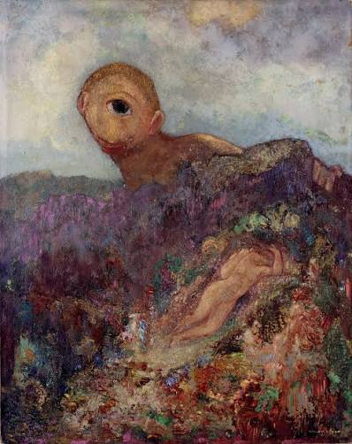

The Cyclopes are giant one-eyed creatures.
Three kinds of Cyclopes can be distinguished. In Hesiod's Theogony, the Cyclopes are three brothers Brontes,
Steropes, and Arges who create Zeus's thunderbolt, Poseidon's trident, and Hades' Helm of Darkness.
The Cyclopes of Homer's Odyssey are a group of uncivilized, cave-dwelling shepherds, including Polyphemus,
whom Odysseus encounters.
wanna know more?
check wikipedia